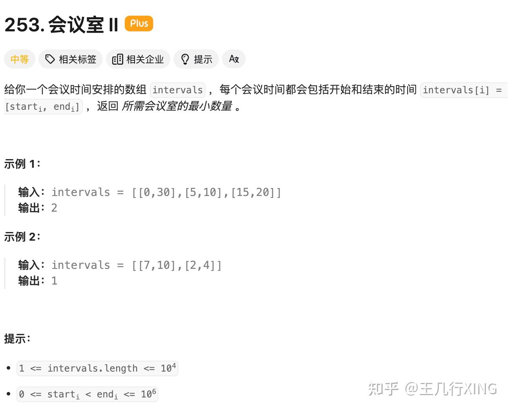
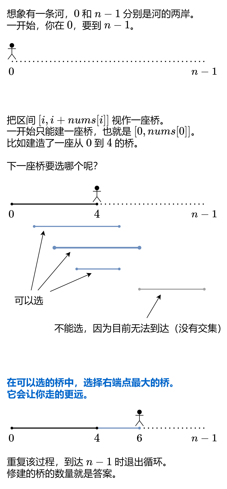

10. 贪心
贪心是 DP 的子集。能贪心的一定可以 DP（但是时间复杂度可能不一样），能 DP 的不一定能贪心。
比如选或不选这个思路，DP 的想法是，枚举每个数选或不选，把所有的情况都枚举到，从中比较哪个最优，本质上是暴力的优化（不重复计算重叠子问题）；贪心的想法是（如果可以贪心），每一步都选最优的，选或不选哪个更好，可以直接算出来，有一种「人为介入」的感觉。
10.1 基本贪心策略
- 有两种基本贪心策略：
- 从最小/最大开始贪心，优先考虑最小/最大的数，从小到大/从大到小贪心。在此基础上，衍生出了反悔贪心。
- 从最左/最右开始贪心，思考第一个数/最后一个数的贪心策略，把 n 个数的原问题转换成 n−1 个数（或更少）的子问题。
- 从最小/最大开始贪心
- 优先考虑最小/最大的数，从小到大/从大到小贪心。
- 如果答案与数组元素顺序无关，一般需要排序。排序后，可以遍历计算。
- 从最左/最右开始贪心
- 对于无法排序的题目，尝试从左到右/从右到左贪心。思考第一个数/最后一个数的贪心策略，把 n 个数的原问题转换成 n−1 个数（或更少）的子问题。要思考什么情况下只能 DP 不能贪心，加深对「局部最优」和「全局最优」的理解。
- 划分型贪心：把数组/字符串划分成满足要求的若干段，最小化/最大化划分的段数。
- 先枚举再贪心：枚举题目的其中一个变量，将其视作已知条件，然后在此基础上贪心。也可以枚举答案，检查是否可以满足要求。（类似二分答案）
- 相邻不同
- 给定正整数数组，每次操作，把数组中的两个数各减少一，并去掉变成 0 的数。目标：使最后剩下的数最小，或者最大化操作次数。
- 相当于给出很多个物品和它们的数量，一样的物品不能相邻
- 由于每次操作的都是两个下标不同的数，把这些下标按顺序拼接，可以构造出一个相邻元素不同的序列。例如 (1,2),(2,3),(3,4) 这三个操作，可以拼接成 [1,2,3,2,3,4]。
- 解法：用一个最大堆实现，每次都取最大的两个数（堆顶），将它们减一后放回堆（是0就不用加入）
- 特殊情况：如果数据量很大，用堆慢慢每次减一模拟会超时，需要用规律直接计算能排多少个物品
1
2
3
4
5
6
7
8
9
10
11
12
|
class Solution {
public long numberOfWeeks(int[] milestones) {
long s = 0;
long m = 0;
for(int num : milestones){
s += num;
m = Math.max(m, num);
}
return m > s - m + 1 ? 2 * (s - m) + 1 : s;
}
}
|
- 反悔贪心
- 当你在遍历时发现前面选了不该选的（即把那次机会用来选当前的更好），那么就进行反悔
- 实现方法是用一个最大堆，每次选择当前元素时把它入堆，当需要反悔时就弹出堆顶元素，并把新选的这个入堆
10.2 区间贪心
- 区间贪心有如下经典问题：
- 不相交区间（单机器调度/活动安排）：给定一些区间，从中选出尽量多的两两互不相交的区间。
- 区间分组（任务调度/会议室）：给定一些区间，把这些区间分成最少的组，使得每组内的区间互不相交。
- 区间选点（射气球，Interval Stabbing）：给定一些区间，在数轴上放置最少的点，使得每个区间都包含至少一个点。最少要放置多少个点？
- 区间覆盖（灌溉花园）：给定一些区间，从中选出尽量少的区间，覆盖一条指定线段 [s,t]。
- 不相交区间
- 按区间右端点排序，然后遍历选择右端点最小的那个。因为如果能选右端点更大的那么这个一定可以选，并且不会影响后面的。然后左端点小于 A 的右端点的区间都与 A 相交，都不能选。
- 我的方法：按左端点排序，左端点相同按右端点排序。遍历时记录前一个区间pre，如果cur与pre相交，则选择右端点小的那个保留。
1
2
3
4
5
6
7
8
9
10
11
12
13
14
| class Solution {
public int eraseOverlapIntervals(int[][] intervals) {
Arrays.sort(intervals, (a, b) -> a[1] - b[1]);
int ans = 0;
int preR = Integer.MIN_VALUE;
for (int[] p : intervals) {
if (p[0] >= preR) {
ans++;
preR = p[1];
}
}
return intervals.length - ans;
}
}
|
- 区间分组
- 按照 left 排序后，用最小堆模拟，堆顶存储每个组最后一个区间的 right。
- 如果当前的 left 大于堆顶，则可以接在这个组的末尾，更新堆顶为 right；否则需要创建一个新的组。
- 原题是会议室II。理解方法：每次都查看最早结束的那一场会议的结束时间，如果最早的那场都没结束那就要分配新的会议室。
- 
1
2
3
4
5
6
7
8
9
10
11
12
|
class Solution {
public int minGroups(int[][] intervals) {
Arrays.sort(intervals, (a, b) -> a[0] - b[0]);
PriorityQueue<Integer> heap = new PriorityQueue<Integer>();
for(int[] interval : intervals){
if(!heap.isEmpty() && heap.peek() < interval[0]) heap.poll();
heap.offer(interval[1]);
}
return heap.size();
}
}
|
- 区间选点
- 与不相交区间类似。灵神方法是按右端点排序，遍历区间，如果 start≤pre，那么这个区间已经被包含。如果 start>pre，那么必须再放一个点。
- 我经过实践发现先按左端点排序也可以。通过while循环找到所有能够用这支箭射掉的气球集合（过程中合法区间会不断缩小）
1
2
3
4
5
6
7
8
9
10
11
12
13
14
15
16
17
18
19
20
21
22
23
24
25
26
27
28
29
30
|
class Solution {
public int findMinArrowShots(int[][] points) {
Arrays.sort(points, Comparator.comparingInt(p -> p[1]));
int ans = 0;
long pre = Long.MIN_VALUE;
for (int[] p : points) {
if (p[0] > pre) {
ans++;
pre = p[1];
}
}
return ans;
}
public int findMinArrowShots(int[][] points) {
Arrays.sort(points, (a, b) -> a[0] != b[0] ?Integer.compare(a[0], b[0]) : Integer.compare(a[1], b[1]));
int ans = 0;
for(int i = 0; i < points.length; i++){
int l = points[i][0], r = points[i][1];
while(i + 1 < points.length && points[i + 1][0] <= r){
i++;
l = points[i][0];
r = Math.min(r, points[i][1]);
}
ans++;
}
return ans;
}
}
|
- 区间覆盖
- 思路：在向前遍历的同时记录遍历过的点中能到达的最远处，每当目前的线段不够用了就取那个最远的补上。
- 如果后面的会影响前面的选择，例如
1326.灌溉花园的最少水龙头数目，那么可以先遍历一次得到一个数组rightMost，代表每个点能到达的最大右端点
- 
1
2
3
4
5
6
7
8
9
10
11
12
13
14
15
16
17
18
19
20
21
22
23
24
25
26
27
28
29
30
31
32
33
34
35
36
37
38
39
40
41
42
43
|
class Solution {
public int jump(int[] nums) {
int ans = 0;
int curRight = 0;
int maxRight = 0;
for(int i = 0; i < nums.length - 1; i++){
maxRight = Math.max(maxRight, nums[i] + i);
if(i >= curRight){
curRight = maxRight;
ans++;
}
}
return ans;
}
}
class Solution {
public int minTaps(int n, int[] ranges) {
int[] rightMost = new int[n + 1];
for (int i = 0; i <= n; i++) {
int r = ranges[i];
int left = Math.max(i - r, 0);
rightMost[left] = Math.max(rightMost[left], i + r);
}
int ans = 0;
int curRight = 0;
int nextRight = 0;
for (int i = 0; i < n; i++) {
nextRight = Math.max(nextRight, rightMost[i]);
if (i == curRight) {
if (i == nextRight) {
return -1;
}
curRight = nextRight;
ans++;
}
}
return ans;
}
}
|
- 关于对区间数组排序的想法
- 当题目意思中存在一条递增的轴，要从最左边慢慢选到最右边（例如时间，从起点跳到终点），要以左端点排序
- 当题目倾向于求区间间的相交关系，并没有其他限制时，按右端点排序
- 但其实我发现要按右端点排序的题用左端点排序+一些额外的贪心思想也可以解决，但是代码会更复杂且易出错
10.3 字符串贪心
- 字典序最小/最大
- 字典序定义：对于两个字符串 a 和 b，从左到右依次比较 a[i] 和 b[i] 的字符 ASCII 值的大小。a[i] != b[i] 时，如果 a[i] < b[i]，那么 a 的字典序更小，否则 b 的字典序更小。如果其中一个到了结尾那么短的那个字典序更小。
- 贪心策略一般是从最左端或最右端开始构造，每次都尽量选最小或最大的字母/数字